Підготовка до Гри
Підготовка до Гри
Переглянути цю сторінку англійською
◄ Попередня | 🚪 Головна 🚪 | Наступна ►
Підгототовка до Простої Гри
- Розкладіть Карту Острова на центрі столу
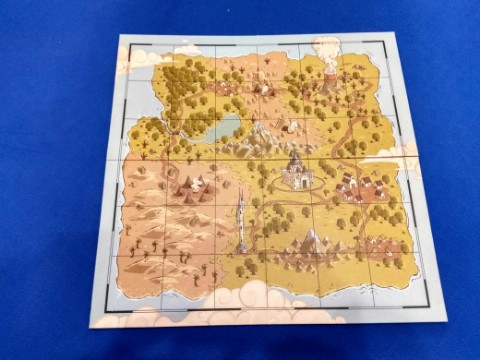
- Кожен гравець отримує усі жетони з однаковим кольором щита. (З червоним щитом для одного гравця, з синім - для іншого)
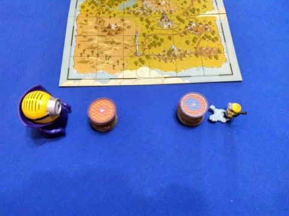
Гравці повинні розділити свої жетони на стартових персонажів (18 жетонів) і персонажів "найманців"(12 жетонів).
Примітка: Для простої гри не потрібні жетони персонажів "найманців". Їх можна повернути до коробки.
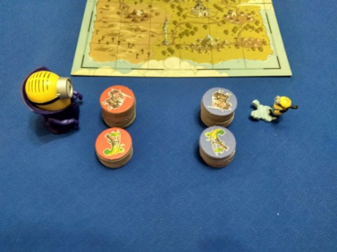 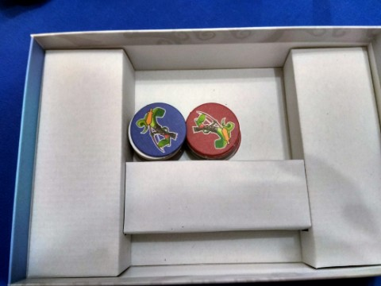
- Оберіть 5 жетонів з стосу стартових персонажів. Не показуйте обрані жетони супернику.
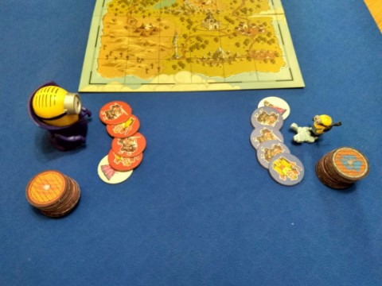
- Ретельно перемішайте жетони що залишились і покладіть їх долілиць біля себе.
- Першим ходить гравець, який нещодавно повернувся з подорожі або переміг у попередній грі.
Підготовка до гри з Катками Погоди
- Покладіть "Поле Погоди та Найманців" біля "Карти Острова"
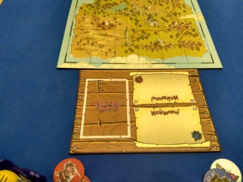
- Перемішайте "Картки Погоди" і покладіть колоду біля "Поля Погоди та Найманців"
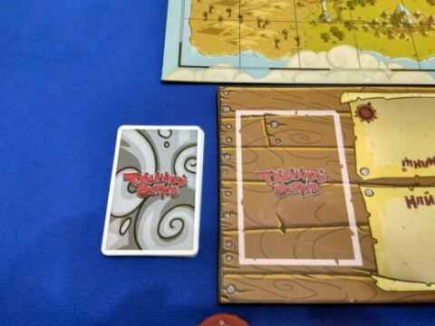
- Гравець, який ходить другим, бере 2 верхні картки з колоди і обирає одну з них. Інша карта повертається під низ колоди.
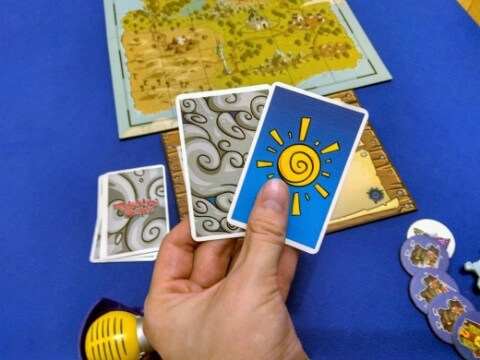
- Гравець кладе обрану картку погоди на "Поле Погоди та Найманців" і застосовує властивість погоди. (усі властивості описані на сторінці "Картки Погоди"). Обрана погода діє до кінця раунду.
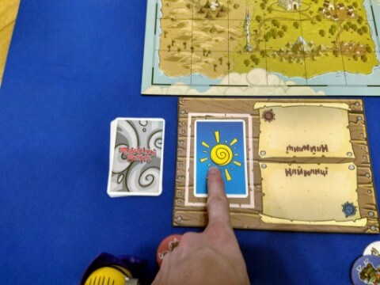
Підготовка до гри з жетонами "нацманців"
Примітка: Правила гри з картками погоди застосовуються у цьому варіанті гри
- Кожен гравець отримує стос жетонів "найманців" з однаковим кольором щита. (З червоним щитом для одного гравця, з синім - для іншого). Гравці кладуть отримані жетони на "Поле Погоди та Найманців".

- Покладіть всі монети біля "Поля Погоди та Найманців"
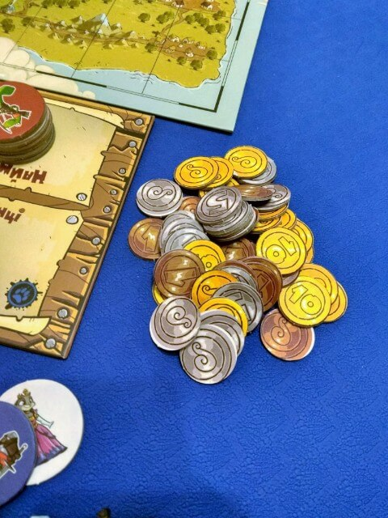
- Усе готово щоб розпочинати гру!
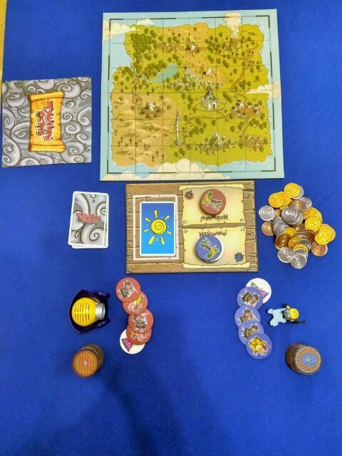
◄ Попередня | 🚪 Головна 🚪 | Наступна ►